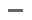

您的电脑上次体检是在49分钟前
如果系统存在垃圾，运行速度会变慢建议您每天坚持体检，提升系统运行速度和效率。
任务设置
第一次使用清理获得40积分! 每天清理可获得更多积分兑换你想要的礼品
系统优化向导
admin12345
等级：8级 积分:12578219
还差20个任务完成
到个人中心
系统设置
IE设置
网速测试
安全设置
定时关机
木马检测
系统修复
内存清理
U盘助手
优化向导

关联设置
安全加固
网络优化
易用性优化
描述
开关状态
禁止U盘等所有磁盘自动运行功能(建议禁止)
禁止资源管理器里面显示文件的扩展名(建议禁止)
禁止默认的管理共享及磁盘分区共享(建议禁止)
禁止IPC$的远程默认共享和进程间通讯IPC$的空连接
开启Windows用户帐户控制系统(简称UAC)
保存设置
下一步
上一步